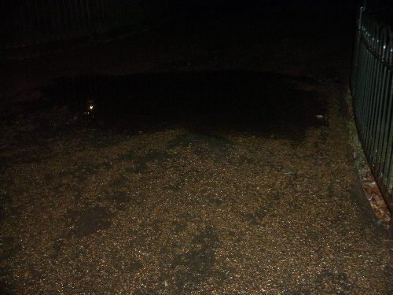
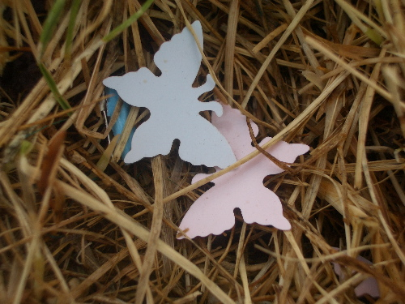

| < | > |
| Happiness | [2004-08-05 20:46] |
| [music Absolute Quietness Of Apes And Cranes] | |
|
 This is my favourite puddle. After it rains it's always there, at the end of the Serpentine, just before we turn the corner to head back home. I love to walk straight into it. It's funny how some folk just can't do that. A puddle is something to be avoided, even if it is only 1.5 cm deep. You never know, your shoes might leak, your trousers might get wet. But, to my mind, for some things in life there really is no reason to grow up. The childish pleasure can always be there. Just like butterflies in the grass.  |
|